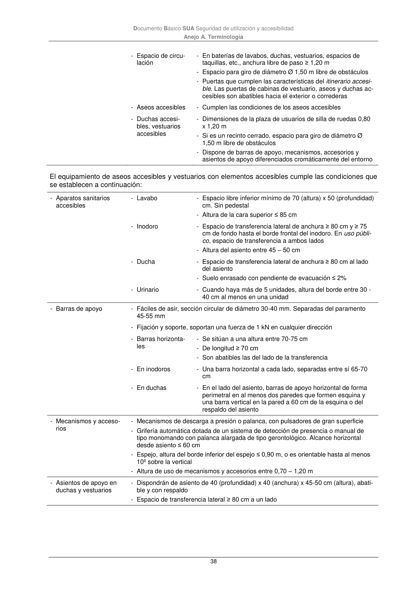

DB-SUA Seguridad de utilización y accesibilidad · edición 2022-06-14 · capa oficial
Documento DB-SUA-oficial · SHA-256 del PDF 3cfb5bbb135e8f02faebd8b844e03e8947994c18d4c9e675a7d2aa37d1cd5958
Página física 38 de 47.
Copia fiel del PDF fuente · Fuente oficial
Ficha de la disposición en la fuente oficial
Formato: Texto de la página (Markdown)
Documento Básico SUA Seguridad de utilización y accesibilidad Anejo A. Terminología 38 - Espacio de circu- lación - En baterías de lavabos, duchas, vestuarios, espacios de taquillas, etc., anchura libre de paso ≥ 1,20 m - Espacio para giro de diámetro Ø 1,50 m libre de obstáculos - Puertas que cumplen las características del itinerario accesi- ble. Las puertas de cabinas de vestuario, aseos y duchas ac- cesibles son abatibles hacia el exterior o correderas - Aseos accesibles - Cumplen las condiciones de los aseos accesibles - Duchas accesi- bles, vestuarios accesibles - Dimensiones de la plaza de usuarios de silla de ruedas 0,80 x 1,20 m - Si es un recinto cerrado, espacio para giro de diámetro Ø 1,50 m libre de obstáculos - Dispone de barras de apoyo, mecanismos, accesorios y asientos de apoyo diferenciados cromáticamente del entorno El equipamiento de aseos accesibles y vestuarios con elementos accesibles cumple las condiciones que se establecen a continuación: - Aparatos sanitarios accesibles - Lavabo - Espacio libre inferior mínimo de 70 (altura) x 50 (profundidad) cm. Sin pedestal - Altura de la cara superior ≤ 85 cm - Inodoro - Espacio de transferencia lateral de anchura ≥ 80 cm y ≥ 75 cm de fondo hasta el borde frontal del inodoro. En uso públi- co, espacio de transferencia a ambos lados - Altura del asiento entre 45 – 50 cm - Ducha - Espacio de transferencia lateral de anchura ≥ 80 cm al lado del asiento - Suelo enrasado con pendiente de evacuación ≤ 2% - Urinario - Cuando haya más de 5 unidades, altura del borde entre 30 - 40 cm al menos en una unidad - Barras de apoyo - Fáciles de asir, sección circular de diámetro 30-40 mm. Separadas del paramento 45-55 mm - Fijación y soporte, soportan una fuerza de 1 kN en cualquier dirección - Barras horizonta- les - Se sitúan a una altura entre 70-75 cm - De longitud ≥ 70 cm - Son abatibles las del lado de la transferencia - En inodoros - Una barra horizontal a cada lado, separadas entre sí 65-70 cm - En duchas - En el lado del asiento, barras de apoyo horizontal de forma perimetral en al menos dos paredes que formen esquina y una barra vertical en la pared a 60 cm de la esquina o del respaldo del asiento - Mecanismos y acceso- rios - Mecanismos de descarga a presión o palanca, con pulsadores de gran superficie - Grifería automática dotada de un sistema de detección de presencia o manual de tipo monomando con palanca alargada de tipo gerontológico. Alcance horizontal desde asiento ≤ 60 cm - Espejo, altura del borde inferior del espejo ≤ 0,90 m, o es orientable hasta al menos 10º sobre la vertical - Altura de uso de mecanismos y accesorios entre 0,70 – 1,20 m - Asientos de apoyo en duchas y vestuarios - Dispondrán de asiento de 40 (profundidad) x 40 (anchura) x 45-50 cm (altura), abati- ble y con respaldo - Espacio de transferencia lateral ≥ 80 cm a un lado
